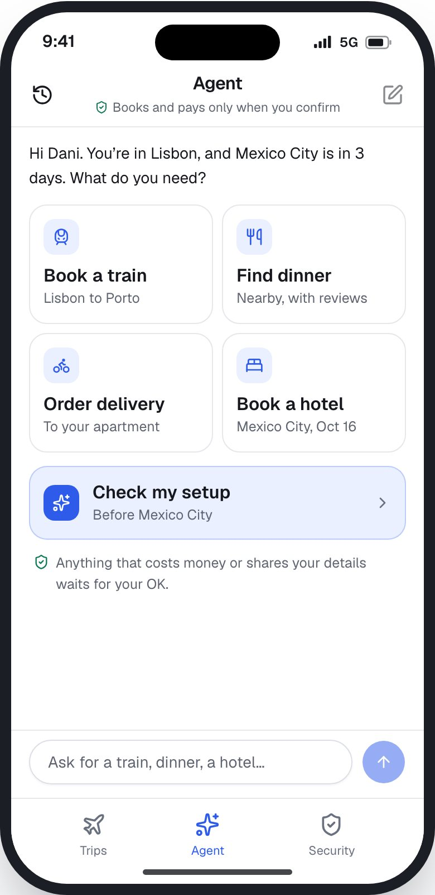

LisbonDani, today
Mexico CityOct 16 to Nov 2
NOMAD.OS
Assignment 5 · AI interaction prototype
Books for you.Never without you.
A travel agent inside NOMAD.OS. It books trains, hotels, and dinner, and asks before it pays or shares anything.
IDSN 523 · Mitch Kostelecky and Ian Harris · Fall 2026
Existing product and selected experience
Airalo gets you online.Then you’re on your own.
- Travelers
- 30M+
- Destinations
- 200+
Selected experience: the three days before a new country
Airalo
- Pick a country
- Buy data
- Install
- Connect
- Top up
- Live in minutes
- No SIM swap
- Home line stays on
Everything else
- Stay
- Train
- Dinner
- Codes and VPN
- Done in other apps
- Risks left to you
User, goal, and current flow
Dani lands in three days.Every step is a different app.
Dani
Remote worker, moves every few weeks
Goal: land in Mexico City ready to work
Lisbon
Tue Oct 13
Buy an eSIM
AiraloLive in minutes
Pick a line for codes
Help articlesAdvice conflicts
E14E23
Book 17 nights
Booking siteIs the listing real?
Train, dinner, delivery
Three more appsCard typed in again
Land and log in
Bank appVPN freezes the bank
E13E26
Mexico City
Fri Oct 16
Opportunity statement
When a remote worker is trying to land in a new country ready to work, they experience a pile of bookings and setup decisions spread across separate apps because each app sells one piece and leaves the risks in between to guesswork. There is an opportunity to help them book what they need and arrive set up, approving every payment and every detail shared.
AI isn’t automatically the answer. We compared three options.
| A better checklist | A better booking site | An AI agentOur pick | |
|---|---|---|---|
| Books it | |||
| Fits Dani’s card, network, and dates | |||
| Flags risks between apps | |||
| Explains each step | |||
| Kept as the fallback | Only with a confirm step and hard limits |
AI role and rationale
Primary role: agent.Secondary role: interpreter.
What it reads
Dani’s request
Trip city and dates
The card it pays with
Network status
Banks, lines, sign-insIf shared
Primary role
Agent
Books within limits Dani sets
Secondary role
Interpreter
Explains Dani’s setup
What it hands back
Shortlists with tested Wi-Fi
Risk flags, with why
Confirm cards
Bookings in Trips
Stays with Dani
ChoosingPayingWhat’s sharedCancellingAnything in a bank
Human and AI responsibility map
The agent prepares.Dani decides.
| Dani | Agent | Shared decision | |
|---|---|---|---|
| Initiation | Asks, or taps a tile | Never starts on its own | Opens a suggested check |
| Input and interpretation | Says what’s needed | Fills in city, dates, card | Missing details get asked |
| Generation or action | Compares the options | Shortlists and flags risks | Picking one |
| Decision or approval | Confirms, changes, or cancels | Shows cost, card, what’s shared | The confirm card |
| Completion and review | Checks Trips, can cancel | Books and files it | Setup fixes: approve or skip |
- Asks first for money or personal details
- Face ID over $100
- Says why when it leaves something out
- NOMAD.OS owns what the card showed
- Never: pays off-site or by transfer, changes bank settings, hides location
Proposed AI interaction flow
Dani starts it and decides it.The agent does the work, then hands it back.
01
Entry point
Opens the Agent tab
02
User input
“Book a hotel…”
03
Interpretation
City, dates, card
04
AI response
3 hotels, 1 left out
05
Human decision
ConfirmChangeCancel
06
Feedback
Typing, then a receipt
07
Recovery
Says no, offers another way
08
Exit and handoff
Booking lands in Trips
Prototype
Live demo.Four moments to watch.
Book a hotel
Confirm card, then Face ID
Find dinner
A transfer deposit, refused
Cancel a booking
The refund, spelled out
Check my setup
Explain, approve, undo

Human flourishing
Agency and learning.Help that doesn’t take over.
Opportunity
Risk
Safeguard
Agency and autonomy
Real choice and control
Dani makes every choice that matters.
Tapping yes without reading.
Short cards. Face ID only over $100.
Learning and capability
Judgment and skill
Every flag and fix says why.
Never learning to judge alone.
“Do it yourself next time” on every fix.
The tension
Filtering scams protects Dani but hides choices. So nothing is hidden silently.
Next test
Five nomads, a teammate as the agent. Do they read the confirm card?
Appendix A
Where the AI enters, and where it stops.
- What activates it?
- Dani opens the Agent tab, or taps Check my setup after a profile downloads. Nothing runs in the background.
- Does it ask, or suggest?
- Dani asks. Its one suggestion: after a hotel booking, it points to setup fixes, and Dani decides whether to open them.
- What information does it use?
- The request, trip city and dates, the card on file, and network status. The setup check sees only what Dani shares.
- Does Dani know what it uses?
- Yes. The share screen lists each source, and every confirm card says what gets shared, and with whom.
- What does it produce?
- Shortlists, risk flags with reasons, confirm cards, bookings in Trips, and a setup checklist.
- What needs approval?
- Anything that costs money or shares personal details. Over $100 also needs Face ID.
- Can Dani edit, reject, or reverse it?
- Change or Cancel on every card. Bookings cancel from Trips. Setup approvals can be undone, except a sent Keyholder card.
- How does it show uncertainty?
- Prices are about-amounts in dollars, Wi-Fi speeds come from other nomads’ tests, and ratings show review counts.
- What if it can’t finish?
- It says so, explains why, and offers another way: a different option, or the steps to do it yourself.
- When does it stop?
- After the receipt and one next step. It never chains bookings on its own.
- How does control return?
- The booking sits in Trips, the chat waits, and every thread is saved in history.
Appendix B · From Assignment 4
Opportunity statements and value proposition.
| Area | Opportunity statement | How might we |
|---|---|---|
| Network judgment | Members value competence and participate through VPN and travel-router routines, but experience tension between fear-driven advice and unclear real risk. | How might we help nomads judge network risk with confidence without reinforcing fear-driven tool buying? |
| Security that moves with youSelected | Members value self-reliance and freedom of movement and participate through second phones, two numbers, and pre-departure prep, but experience tension between security systems that assume a home and lives spent crossing borders. | How might we help nomads arrive in any country already set up, and recover from anywhere, without assuming a home or hiding where they are? |
| Money that keeps moving | Members value freedom of movement and participate through multi-bank, multi-app money stacks, but experience tension between automated compliance and travel patterns that look suspicious. | How might we help nomads keep access to money during a freeze without needing a home bank to fall back on? |
Value proposition
For digital nomads and remote workers who value self-reliance and freedom of movement but experience security systems that assume a home, NOMAD.OS helps them arrive in any country already set up, and recover from anywhere by downloading one profile per country that sets four layers: network, money, numbers, and a safety net.
Appendix C · From Assignment 4
Evidence table, 1 of 3 E1 to E9
| ID | Source | Observation | Interpretation | Value | Tension |
|---|---|---|---|---|---|
| E1 | Creator setup guides, Jul and Oct 2026 | Gear-by-gear stacks: a named travel router running WireGuard, multiple eSIMs, priced and weighed per layer. | The setup itself is a display of competence. | Preparedness, control | Preparedness vs. burden and cost |
| E2 | Nomad tools blog, Sep 2026 | Argues VPN value depends on the work; light, non-sensitive work on a personal hotspot may not need one. | Nuance entering a VPN-maximal conversation. | Practicality | Fear vs. actual need |
| E3 | VPN vendor blog, Aug 2026 | Opens by saying most public Wi-Fi guides sell fear or sell a VPN; calls a VPN often overkill for low-risk use. | Even sellers distance themselves from fear marketing. | Calm competence | Marketing vs. trust |
| E4 | VPN vendor blog, two posts, Jul and Aug 2026 | One post says HTTPS protects you from hackers on public Wi-Fi; the other says HTTPS alone won’t keep you safe. | Guidance is unstable even within one source. | Clarity | Conflicting advice |
| E5 | VPN blog, Jul 31, 2026; travel blog comments, 2026 | Readers describe buying travel routers so an employer sees a home IP; the vendor warns detection is likely. | Security gear doubles as concealment. | Freedom | Protection vs. concealment |
| E6 | Travel blog post and reader comment, Jul 2026 | A perpetual traveler’s phone is stolen; a reader notes phones are grabbed while unlocked in use. | Risk peaks at the moment of use, not at rest. | Vigilance | Convenience vs. safety |
| E7 | Phone accessory brand blog, Aug 2026 | Recommends carrying a secondary “burner” phone for risky situations abroad. | Redundancy extends to whole devices. | Preparedness | More gear vs. simplicity |
| E8 | Hacker News, Ask HN, Sep 2026 (not travel-specific) | After a phone theft, the poster can’t reach banking, email, or cloud files. Replies: keep two signed-in devices; keep codes in a password manager. | One device is a single point of failure; peers prescribe redundancy. | Self-reliance, peer help | Security vs. access |
| E9 | Q&A help site, Oct 2026 (traveler, not confirmed remote worker) | Traveler in New Zealand is locked out of Gmail; her recovery number is an Australian line she can’t use. | Recovery paths assume you’re near home. | Access | Mobility vs. verification |
Appendix C · From Assignment 4
Evidence table, 2 of 3 E10 to E18
| ID | Source | Observation | Interpretation | Value | Tension |
|---|---|---|---|---|---|
| E10 | Google Account Help, current page (context) | Recovery tips: use a familiar device and a location where you usually sign in, like home or work. | Platform policy encodes a home. | n/a | Home assumption |
| E11 | Apple Support, current page (context) | Stolen Device Protection adds biometric checks and a delay when the phone is away from familiar locations. | The same assumption, in theft protection. | n/a | Home assumption |
| E12 | r/digitalnomad thread, Apr 22, 2026 (also summarized in May 2026) | About $68k held by a fintech app for nearly 6 months; 230+ comments. Replies: it isn’t a bank, keep a real one; regulator complaints released funds. Update: money returned late May. | Failure stories become community rules. | Collective knowledge | Convenience vs. control of money |
| E13 | Expat VPN site, Oct 2026; nomad tax guide, Jun 2026 | One says a dedicated-IP VPN ends repeated selfie checks; the other says VPNs can trigger fraud flags and freezes. | The same tool is sold as cure and blamed as cause. | Access | Conflicting advice |
| E14 | Expat phone setup guide, May 2026 | Banks and government portals send codes only to real US numbers, mostly not VoIP; recommends a cheap carrier line kept active from abroad. | Nomads rebuild a “home” number. | Continuity | Freedom vs. home dependence |
| E15 | Nomad blog, Apr 2026 (8 years nomadic) | Calls the password manager the keystone; keeps a printed emergency kit sealed with a trusted person at home; warns against carrying the only copy. | Recovery depends on people and place. | Care, preparedness | Freedom vs. home dependence |
| E16 | r/digitalnomad, ~Jun 2026, 70+ comments | PSA that the phone is the key to everything; replies advise storing IMEI and carrier details in a password manager; one reply also locked out of Google. | The phone is a single point of failure, and the community knows it. | Preparedness | Security vs. access |
| E17 | r/digitalnomad, ~Aug 2026, 40+ comments | Thread on carrying a secondary phone; the top answer adopted it after a phone snatch in Barcelona. | Redundancy is learned through failure. | Preparedness | More gear vs. simplicity |
| E18 | r/digitalnomad, May to Oct 2026, three threads | Full-time travel “ruined” a poster’s number; replies split life across two numbers; the keep-your-US-number question recurs and draws weary replies. | The home number is infrastructure nomads must maintain from afar. | Continuity | Freedom vs. home dependence |
Appendix C · From Assignment 4
Evidence table, 3 of 3 E19 to E27
| ID | Source | Observation | Interpretation | Value | Tension |
|---|---|---|---|---|---|
| E19 | r/digitalnomad, ~May 2026, 160+ comments | A newcomer about to quit and travel is told to carry two phones and absolutely keep a home number for bank and government codes. | Status is passed down as rules for newcomers. | Belonging, care | Freedom vs. home dependence |
| E20 | r/digitalnomad, Apr to Aug 2026, 120 to 390+ comments | Stealth-nomading threads reference the subreddit wiki setup (travel router, tunnel home, kill switch); a reply says IT reads a foreign login as stolen credentials. | Concealment is organized and documented, not fringe; corporate security also assumes a home. | Freedom, control | Protection vs. concealment |
| E21 | r/digitalnomad, ~May 2026, 10 to 20+ comments | Newcomers ask whether a $10k transfer will trigger a freeze, and report transfers held for extra security checks. | Failure stories shape behavior before failure happens. | Control of money | Convenience vs. control |
| E22 | X, Sep 21, 2026, creator (~23.5k followers), 367 likes | Phone stolen by motorbike thieves in Asunción; cards added to Apple Pay and thousands taken; 2FA tied to the stolen phone and a Spanish SIM, so he flew to Spain to recover the number. | Recovery can require physically returning to a “home” country. | Self-reliance | Freedom vs. home dependence |
| E23 | X, Oct 5 to 8, 2026, three small accounts | One says get your cell number out of 2FA and use Google Voice; one says banks may refuse Voice numbers, so test each bank; one says keep the home SIM on just for codes. | Advice conflicts in the same week, with no shared answer. | Clarity | Conflicting advice |
| E24 | X, Oct 6, 2026, developer creator (~400k) | Praises a GL.iNet travel router for making travel easier; a VPN is optional. | The router is also a mainstream convenience gadget, not only a security or concealment tool. | Convenience | (Complicates the burden tension) |
| E25 | X, Oct 1, 2026, small nomad account | Describes briefing an eSIM provider on 2FA, eSIM, and the financial risks of a stolen phone. | The market is starting to notice the same gap. | n/a | Competitive signal |
| E26 | r/digitalnomad, ~May 27, 2026, 38 upvotes, 39 comments | A work account was frozen after using a consumer VPN while traveling; replies say commercial VPNs are easy to detect and suggest self-hosting at a parent’s house. | The security tool triggers the lockout, and the fix routes back through home. | Access | Security vs. access |
| E27 | r/GlInet, ~Apr 8, 2026, 13 comments (verified via a listing) | A newcomer offers to pay for help setting up a travel router to present a home IP; replies cover home-side servers, 2FA, and disabling Wi-Fi on work laptops. | Concealment setups are hard enough that newcomers pay for help. | Freedom | Protection vs. concealment |
Appendix D · From Assignment 4
Research-to-design traceability.
| Evidence | What we observed or concluded | Design response |
|---|---|---|
| E10 E11 E22 | Recovery keys off home; one nomad flew home to get a number back. | Safety net: Break Glass from any browser; a Keyholder replaces the familiar-place check. (S6, S7) |
| E13 E23 E26 | The right answer depends on the country and the bank. | Country profiles, with dated reports for each country. (S1, S2) |
| E2 E3 E4 | VPNs: needed versus overkill, and fear-driven advice. | Network layer: VPN on only for untrusted Wi-Fi. (S3) |
| E13 E26 | VPNs trigger bank and work-account freezes. | Network layer: apps that flag VPNs go direct. (S3) |
| E6 E22 | Thieves add cards to wallets and move money fast. | Money layer: cards locked to trip dates and places. (S4) |
| E12 E21 | Fintech freezes strand money for months. | Money layer: a backup way to pay and a freeze plan. (S4) |
| E14 E18 E19 | Nomads keep a home number alive for codes. | Numbers layer: home line for codes, local eSIM for data. (S5) |
| E8 E23 | Advice splits on SMS versus other code methods. | Numbers layer: codes that can leave SMS move to an authenticator. (S5) |
| E15 E17 | Nomads leave kits with family and add backups after a theft. | Safety net: a Keyholder with a split key. (S6) |
| E5 E20 | Security gear is used to hide location from employers. | Principle: encrypt, don’t disguise. The VPN exits where you are. (Principles) |
Appendix E · From Assignment 4
Sources for every evidence item.
- E1dev.to/notifyshow/the-ultimate-digital-nomad-setup-minimalist-tech-and-working-from-anywhere-179k; nomadstoolslab.com/digital-nomad-setup-guide-2026
- E2ontheroadtools.com/vpn-for-digital-nomads-do-you-actually-need-one
- E3windscribe.com/blog/how-to-use-public-wi-fi-safely
- E4protonvpn.com/blog/vpn-myths; protonvpn.com/blog/public-wifi-and-https
- E5vpn.pro/blog/can-your-employer-detect-that-youre-using-a-vpn-while-working-remotely; indietraveller.co/best-travel-vpn (comments)
- E6johnnyjet.com/dont-fall-for-this-new-phone-theft-scam-targeting-tourists
- E7phoneloops.com/blogs/posts/phone-security-while-traveling-europe-prevent-theft-stay-safe-in-2026
- E8news.ycombinator.com/item?id=49742976
- E9justanswer.com/email/jeery-locked-gmail-account-currently-overseas-none.html
- E10support.google.com/accounts/answer/7299973
- E11support.apple.com/120340
- E12reddit.com/r/digitalnomad/comments/1ssjy5m; summary at moveandmoney.com/blog-fintech-account-frozen-2026
- E13safeexpatvpn.com/revolut-account-restricted-abroad; nomadtaxguide.com/blog/digital-nomad-banking-guide
- E14expatretireguide.com/money/phone-setup
- E15tonydehnke.com/blog/digital-nomad-backup-tools
- E16reddit.com/r/digitalnomad/comments/1uh3o4f
- E17reddit.com/r/digitalnomad/comments/1vwj8pg
- E18reddit.com/r/digitalnomad/comments/1w75mkf; 1wyr9jc; 1t8q1ig
- E19reddit.com/r/digitalnomad/comments/1ti45hs
- E20reddit.com/r/digitalnomad/comments/1vzmfww; 1tr5hou; 1slwlzs
- E21reddit.com/r/digitalnomad/comments/1tqfsq4; 1tlf6pc
- E22x.com/hispanicnomad/status/2102094776187134436
- E23x.com/GabeLenz/status/2108298536093896991; x.com/StephenZhou1004/status/2108115835294216253; x.com/nexkit2026/status/2107078468936908918
- E24x.com/theo/status/2107590392128704776
- E25x.com/baddigitalnomad/status/2105673102768419026
- E26reddit.com/r/digitalnomad/comments/1tp3a7b
- E27reddit.com/r/GlInet/comments/1sfksl9
Reddit items come from Google listings filtered to the study window, dates estimated from post IDs; X posts were opened and checked by hand. Dates are publication or comment dates where shown; otherwise estimated from the page’s indexed age and given to the month. Policy pages were read in October 2026. Usernames are omitted throughout.
Appendix F
References.
Airalo. (2026, June 2). Airalo surpasses 30 million users [Press release]. https://www.airalo.com/about-us/press-releases/airalo-surpasses-30-million-users
Existing product analysis
Amershi, S., Weld, D., Vorvoreanu, M., Fourney, A., Nushi, B., Collisson, P., Suh, J., Iqbal, S., Bennett, P. N., Inkpen, K., Teevan, J., Kikin-Gil, R., & Horvitz, E. (2019). Guidelines for human-AI interaction. Proceedings of CHI 2019. https://doi.org/10.1145/3290605.3300233
Explain, confirm, and support correction
Google PAIR. (2021). People + AI guidebook. https://pair.withgoogle.com/guidebook
Trust, feedback, and errors
OpenAI. (2025, January 23). Introducing Operator. https://openai.com/blog/introducing-operator
Precedent: an agent that asks before it buys
Parasuraman, R., Sheridan, T. B., & Wickens, C. D. (2000). A model for types and levels of human interaction with automation. IEEE Transactions on Systems, Man, and Cybernetics, Part A, 30(3), 286-297. https://doi.org/10.1109/3468.844354
How much the agent does on its own
Shneiderman, B. (2022). Human-centered AI. Oxford University Press.
High automation with high human control
Federal Trade Commission. (n.d.). Avoid scams when you travel. Consumer Advice. https://consumer.ftc.gov/articles/avoid-scams-when-you-travel
Wire transfers as a scam signal
NOMAD.OS team. (2026). Assignment 4 research: 27 public posts on how nomads stay secure, E1 to E27. IDSN 523.
Evidence codes on slide 3, in full in Appendix C